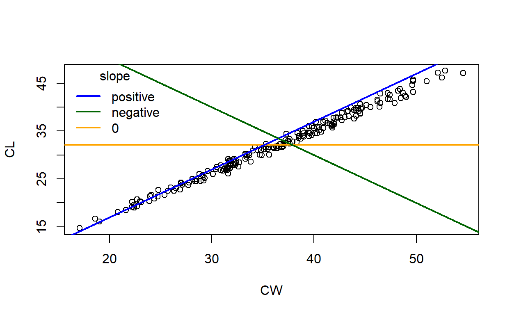

Introduction
This tutorial will look at simple linear regressions with one continuous predictor variable and one continuous response variable.
We will:
- Conduct a linear regression on biological data in R to derive a parameterised linear model
- Use a parameterised linear model to predict new values
- Use output from linear regressions in R to evaluate hypotheses
- Look at how to report the results of a linear regression
- In a figure
- In text
Crabs

We will use the dataset crabs. This dataset is provided in R in the package MASS. I have already loaded the data for you within the tutorial so you don’t need to do it but you will need to load it via library(MASS) if you want to try code in the Console or in a script. What happens in the interactive tutorial is independent of R’s Environment.
We should always check the dataset so that we understand the structure of our data before analysing it.
str(crabs)'data.frame': 200 obs. of 8 variables:
$ sp : Factor w/ 2 levels "B","O": 1 1 1 1 1 1 1 1 1 1 ...
$ sex : Factor w/ 2 levels "F","M": 2 2 2 2 2 2 2 2 2 2 ...
$ index: int 1 2 3 4 5 6 7 8 9 10 ...
$ FL : num 8.1 8.8 9.2 9.6 9.8 10.8 11.1 11.6 11.8 11.8 ...
$ RW : num 6.7 7.7 7.8 7.9 8 9 9.9 9.1 9.6 10.5 ...
$ CL : num 16.1 18.1 19 20.1 20.3 23 23.8 24.5 24.2 25.2 ...
$ CW : num 19 20.8 22.4 23.1 23 26.5 27.1 28.4 27.8 29.3 ...
$ BD : num 7 7.4 7.7 8.2 8.2 9.8 9.8 10.4 9.7 10.3 ...We should also look at the help file for this dataset: help(crabs). We can see that there are two categorical variables (Factors) and five continuous variables (numeric). In zoological terminology, sp is the abbreviation of species and carapace is a shell.
Is there a relationship between the width and length of a crab shell?
There are two variables we will look at to answer the above question:
- CL: Carapace length (mm) - our response variable
- CW: Carapace width (mm) - our predictor variable
Both of these variables are numeric and continuous, which makes a linear regression suitable to assess their linear relationship.
The code we use here can be applied to any dataset. You can try it with any biological system of your choice in your own time. For example, airquality has environmental data or the Penguins dataset about penguins can be downloaded as a package.
Let’s start by plotting the data - always a good way of visualising the data for the first time. The general plot function is plot(Y ~ X, data) where Y and X are the response and predictor variable, respectively, and data is the name of the dataset. The data looks like this with the linear regression line:
Relationship between shell length and shell width with a linear regression line (blue)
The mathematical expression for the regression line (blue) is:
\[CL = \beta_0 + \beta_1 CW\]
We need to calculate the values of \(\beta_1\) and \(\beta_0\) to parameterise the model. We could do it by hand for each observation, but that becomes an impossible task for large datasets. That’s where R comes in. But first we need to formulate our hypotheses!
Is there a relationship between the width and length of a crab shell?
Remember: Statistical models represent hypotheses about a biological system
To answer our question we need two hypotheses: a null hypothesis we are testing against and an alternative hypothesis we are testing (the effect we want to see).
Remember: A hypothesis must be testable and must be falsifiable. We do not “prove” hypotheses. We find evidence to support them.
Importantly, we want to imply causation in linear regression so a correlation does not give us the inference to support our hypotheses. Based on the hypotheses above, you should be able to sketch the graph we expect to see if our data supports either of these hypotheses.

Great! Now we can fit a linear model to our data and test our hypotheses.
Linear regression function
A linear regression in R follows the general formula
lm(response ~ predictor, data)where lm stands for linear model, response is our response variable, predictor is our predictor variable and data is the name of our dataset. ~ indicates a relationship between two variables.
In crabs, CL is our response variable and CW is our predictor variable.
Replace the general linear regression function with the correct code for the crabs dataset. You must press Run Code to see the output
lm(response ~ predictor, data)remember `CL` and `CW` are capitalisedlm(CL ~ CW, crabs)Did you get some output when you pressed Run Code?
It should tell us two things:
- Call is the formula (model) used for the linear regression. It should be the same as the linear model code
- Coefficients are the estimated coefficients of the model - the intercept \(\beta_0\) (
Intercept) and the slope \(\beta_1\) (CWbecause shell width is our predictor variable)
Linear regressions are always done on the entire data, not on averages. i.e. you wouldn’t use the average of your replicates for each treatment for the underlying data. To fit a line to data, ordinary least squares regression depends on quantifying variation of observations around the mean (think back to how sampled data from a population is distributed). Averaging data removes that variation and thus there is less information for R to use (fewer degrees of freedom).
Parameterising our model
Now we have all the information to parameterise our linear model \(CL = \beta_0 + \beta_1 CW\). We can simply replace the unknown values of \(\beta_0\) and \(\beta_1\) with the estimated values.
Using the crabs linear model R output:
Plotting the regression
Great! We have our model. We should plot it with our data to make sure it makes sense.
The general formula to plot a graph is
plot(Y ~ X, data)
We can also change the aesthetics of the figure to make it easier to read. Here are some plotting options for plot:
pchis the symbol type.1is an open circle, the default.16is a filled in circle. Other numbers will give other symbols.btyis the border of the plot."o"is default and will plot a box around the plot."l"(lowercase L) will plot only the bottom and right axes.colis the colour of the points.1is black (default). You can use numbers (1:7) to refer to the default colour palette or you can use colour names (e.g."red"or"blue")
crabs dataset using filled circles and only the bottom and right axes. You can pick any colour you want
plot(Y ~ X, data, pch = 1, bty = "o", col = "black")Adding our regression line
Let’s add the regression line to the above plot. We need to plot the graph and run an additional line of code that plots a straight line
The formula to plot a straight line is
abline(intercept, slope)because it plots a line from a to b. The intercept is the first value, the slope is the second value.
You can also change the aesthetic of the regression line:
colwill change the colourlwdwill change the line width (default is1). Accepts numbersltywill change the line type (default is1, a solid line). Accepts numbers
Here are the coefficients again for the intercept and slope respectively: -0.6619479, 0.8998462
Enter in your code from the above plotting exercise. Then complete theabline() formula to plot our regression line. You can change the aesthetics of the line. Press run.
plot(Y ~ X, data)
abline()The slope and the intercept of our model was calculated by lm(CL ~ CW, crabs)If you’re correct the graph should look like the one at the start of the tutorial. Now that we have our model, we can use the model!
Predicting new values
One application of statistical models is to make predictions about outcomes under new conditions
We can calculate the value of the response variable from any given value of the predictor variable. You need a fully parameterised model to do this - which we have!
Using the crabs example, we can use the parametrised equation, \(CL =\) -0.7 + 0.9 \(\times CW\), to work out the length of a crab for any value of shell width.
For example:
If a crab is 10 mm wide, what is its predicted shell length?
- We are told the value of shell width (10 mm)
- We know the parameterised linear model:
\(CL =\) -0.7 + 0.9 \(\times CW\)
- We can substitute the value of 10 for CW into our parameterised model:
\(CL =\) -0.7 + 0.9 \(\times 10\)
- and solve for length:
\(CL =\) 8.3 mm
Let’s try an example using the coefficients above (to 1 decimal place):
Try another one:
Testing hypotheses with linear regressions
\(H0\): There is no relationship between shell length and shell width
Here are three regression lines (blue, orange, green) representing three hypotheses. If we expect no relationship between shell length and width following our null hypothesis, which regression line would we expect to see?
Graph of carapace length against carapace width of crabs with hypothesised regressions
We see from our predicted lines (below) that if the slope of the line is 0 (red), then we accept the null hypothesis and reject the alternative hypothesis. If the slope is different to 0 (blue), then we reject the null hypothesis and accept the alternative.
Our predicted linear regressions for the null (red) and alternative (blue) hypotheses
Note that in our alternative hypothesis we did not specify the direction of the relationship (positive or negative), thus we would accept either a positive or negative slope as support for H1. We could be more specific when formulating hypotheses or formulate more than one alternative hypothesis (e.g. H2, H3 etc).
So we need use the slope of the line to test our hypotheses. How do we do that?
We’ve already done it with our lm(CL ~ CW, crabs) code.
We get a slope of 0.9. But is this enough evidence for us to accept/reject hypotheses? No. What if the slope is not 0 because of random chance? We need to be confident that our estimated slope is significantly different to 0. How do we do that?
Statistical significance is not the same thing as biological significance. A relationship between two purely randomly generated numbers can be statstically significant but have no biological meaning! Language matters when presenting results.
The predicted slope of the line for the null hypothesis can be considered a known population level value.
Our observed slope of the line from empirical data can be considered an estimated/observed population value.
We need a statistical test of comparing an observed population value to the known population value.
Do you know of one such test from previous lectures?
R has already done this automatically as part of lm but this additional information is hidden from us. We can see more information by looking at the summary of our linear regression.
summary(lm(Y ~ X, data))gives us more information about our linear regression
To see more information about our linear regression we need to ask to see the summary using summary(lm()).
lm code to show the full summary of the linear regression
lm(CL ~ CW, crabs)
Call:
lm(formula = CL ~ CW, data = crabs)
Coefficients:
(Intercept) CW
-0.6619 0.8998 lm is nested within summaryHave you missed a bracket?summary(lm(CL ~ CW, crabs))When you run summary you get a lot of information. Let’s break it down from top to bottom:
- Call is the formula used to do the regression
- Residuals are the residuals of the ordinary least squares regression
- Coefficients are the estimated coefficients we saw earlier plus the standard error of these estimates, a t-value from a one sample t-test testing whether the estimated coefficient is significantly different to 0 and the P value of this t-test
- Some additional information about the regression at the bottom which we won’t look at now
Look at the P-value column in the summary above. There are two P values - one for the intercept and one for the slope. Both are testing the following hypotheses:
- H0: The coefficient estimate is equal to 0
- H1: The coefficient estimate is not equal to 0
We can use the test on the slope (CW) to test our main hypotheses:
- If we accept the null hypothesis on the one sample t-test, then we are concluding that the slope of our line is 0 and that there is no relationship between shell length and width - our null hypothesis
- If we reject the null hypothesis on the one sample t-test, then we are concluding that the slope of our line is not 0 and that there is a relationship between shell length and width - our alternative hypothesis
The P value of the one sample t test on the slope of our linear regression is < 0.05, meaning that there is less than 5% probability that our estimated slope has occurred due to random chance (i.e. to accept the null hypothesis). Thus, we can reject the null hypothesis and accept the alternative hypothesis:
H0: There is no relationship between crab shell length and shell width
H1: There is a relationship between crab shell length and shell width
We can take it one step further and be more specific about our conclusions because we know more about the relationship between slope length and width: There is a positive relationship between shell length and shell width.
We know it’s a positive relationship because the value of the slope is positive.
Reporting results
The final step is to communicate our statistical analysis in words. R output on its own has no meaning to other people, that’s why writing a results paragraph is really important because it places the analyses in to context for other people to understand.
We need to communicate our general conclusions, our main results and some detail about the statistical test:
- Whether you accept or reject your hypotheses
- The main trends in the data
- The parameterised linear regression equation
- The statistical analysis
- The name of the test (linear regression)
- The t value of the one sample t-test
- The P value of the t-test
- The degrees of freedom of the test: You can see this at the bottom text of summary (
Residual standard error). This is usually reported as a subscript of the t statistic
Here’s an example of how to put the linear regression on the crabs dataset into a sentence:
There is a positive relationship between shell length and shell width (linear regression, \(t_{198}\) = 140.5, P < 0.001).
You can compare these numbers with the summary of the linear regression:
Call:
lm(formula = CL ~ CW, data = crabs)
Residuals:
Min 1Q Median 3Q Max
-1.6732 -0.4943 -0.1069 0.5915 1.6396
Coefficients:
Estimate Std. Error t value Pr(>|t|)
(Intercept) -0.661948 0.238574 -2.775 0.00606 **
CW 0.899846 0.006404 140.504 < 2e-16 ***
---
Signif. codes: 0 '***' 0.001 '**' 0.01 '*' 0.05 '.' 0.1 ' ' 1
Residual standard error: 0.7112 on 198 degrees of freedom
Multiple R-squared: 0.9901, Adjusted R-squared: 0.99
F-statistic: 1.974e+04 on 1 and 198 DF, p-value: < 2.2e-16I did not use the word “significant” in the sentence because that is already implied by the significant P value is already.
Other considerations:
- Do not report the P value on its own - P values have little meaning without the rest of the information about the statistical test
- Summarise really small P values (e.g. P < 0.01) rather than writing out really small numbers with many decimal places. Don’t use scientific notation.
Summary: Example lab report
We investigated whether there a relationship between the width and length of a crab shell. We found there is a positive relationship between shell length and shell width (linear regression, \(t_{198}\) = 140.5, P < 0.001), supporting our alternative hypothesis, and we reject the null hypothesis that there is no relationship between shell length and shell width. The relationship between shell length and shell width can be described by the linear model \(CL =\) -0.7 + 0.9 \(\times CW\) (Figure 1).
Figure 1. Relationship between shell length and shell width (points) with a linear regression line (red)
Recap
You now know how to do simple linear regressions with one predictor variable and one response variable.
We have:
- Conducted a linear regression on biological data in R to derive a parameterised linear model
- Used a parameterised linear model to predict new values
- Used output from linear regressions in R to evaluate hypotheses
- Looked at how to report the results of a linear regression
- In a figure
- In text
A final recap quiz